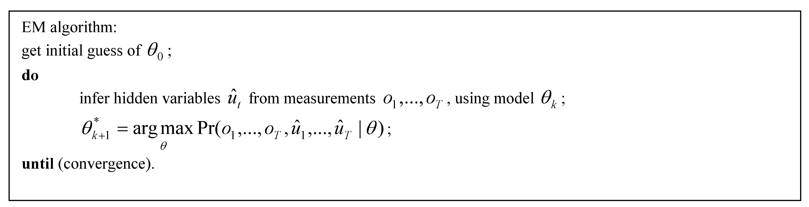

本文主要内容学习整理自引用[1]。
1. 引言
在上一篇中，我们对动态贝叶斯网络的基本形式、概念和模型问题进行了一定的解释。其中，大部分内容都还停留在对单独的子模型（sub-model）的问题求解（例如，两大主要问题：推断和学习）。在这篇文章中，我们将从时序模型的角度出发，考虑在时间上结点具有关联的动态贝叶斯网络的主要求解问题，也就是推断（inference）和参数学习（parameter learning）。
由于在大部分的时态系统中，对于模型结构是大体可知的，那么本文主要考虑的是在结构已知的情况下，进行概率推断和学习参数的问题。
相比于静态贝叶斯网络，动态贝叶斯网络的挑战在于，每个time slice的子模型间存在结点的相互关系，那么在上述两个问题中必须要考虑到这些时间连接关系带来的影响。
在概率推断中，我们必须要对网络模型进行展开（unrolling or rolling up），同时要保证各结点的依赖关系，以及隐结点对观测结点的影响。
在参数学习中，主要难点在于——部分隐结点的概率分布情况的正确程度（correctness）是很难获知的。
以下分别对这两个问题的具体求解进行介绍。
2. 概率推断—网络展开问题
引用[2]将DBN中的结点分为三个类别：
- dynamic nodes（DN）：随时间进行演变的对象
- static nodes（SN）：不随时间进行演变的对象
- temporary nodes（TN）：不同时刻接收不同的取值的对象，也称为evidence nodes
在DBN的网络展开问题中，我们希望每个时刻的子模型结构是一定的，那么在分析时刻$t$的模型时，我们希望利用推断来计算$t-1$时刻的结点带来的影响（influence），并将其删除。这个过程可以理解为网络展开。通过网络展开操作，时刻$t$的dynamic nodes可以转变为root nodes。
实际上，网络展开的结果，其实是将上一个时刻的知识引入到当前时刻的模型中。其主要依赖的是马尔科夫特性，也即将之前观测到的结果累积到当前时刻，不断迭代下去。
网络展开的问题在于，其结点消除（node elimination）的方法，可能会引入额外的结点链接关系，并进一步复杂化网络的结构，因此，一些方法被用于更为高效的网络展开：
- 连接先验和转移网络（connecting prior and transition networks）
- 时态不变网络（temporally invariant networks）
- 随机模拟（stochastic simulation）
- 结点关系的准确表达（extrac representation of node dependencies）
2.1 连接先验和转移网络
在这种类型的DBN表达中，可以将网络分为两个部分：
- 初始时刻的贝叶斯网络模型，即先验网络（prior network）；
- 连续两个时刻间结点的依赖关系，即转移网络（transition network），它是两个贝叶斯网络的结合。
那么，网络展开的问题可以通过融合上述两个网络部分来进行求解。
利用先验网络和转移网络表示网络
在上图中，$t=0$时刻的随机变量的先验概率和条件概率在左图中进行描述；$t=1, \ldots, T-1$各个时刻的条件依赖关系则由右图给出。
在先验和转移网络中，若要进行概率推断，可以分别对两部分进行求解。注意，其前提假设在于一阶马尔科夫特性，即当前时刻的情况仅仅与上一时刻的情况相关。
2.2 时态不变网络
在展开操作后网络结构保持不变的网络可以被认为是时态不变网络。其前提在于，网络中只有一个temporal node接收来自于上个时刻的必要信息，也就是说网络中只有这个结点受到上个时刻的影响，而在展开中不涉及到其他结点间的关系。
时态不变网络，只有结点$X$受到上个时刻结点的影响
相比于时态不变网络，下图中给出了一个时态变化网络（temporally variant network）。
时态变化网络
在上图中，我们发现，变量$X$和$Z$都受到上一个时刻结点的影响。例如，$X_2$和$Z_2$都依赖于$X_1$，也即在它们二者之间，是非独立的。因此，在转换后，我们需要给$X$和$Z$之间加入一条边。
一个子模型中各结点完全连接的网络一定是一个时态不变网络，当然其计算非常复杂。通常这种情况下，需要将其转化为一个时态变化模型，并通过更为有效的结点消除算法来进行推断和学习。
2.3 随机模拟
随机模拟过程是通过一系列采样值来逼近网络中状态结点的置信（brief）。
典型的方法是似然权重（likelihood weighting）法。它通过有限次数的试验，每次试验的权重根据观测到的证据下的似然进行权重计算。通过对特别结点上加权平均值的计算，可以获得这些结点上的概率分布信息。
2.4 结点关系的准确表达
在DBN中，有三种结点类型间的关系是允许的：
- between dynamic nodes (DN) and temporary nodes (TN)
- between dynamic and dynamic nodes
- between static nodes (SN) and dynamic nodes (DN)
以下分别进行描述。
2.4.1 DN和TN间依赖
TN也称为evidence nodes。
DN和TN间依赖，TN只受到DN的独立影响
2.4.2 DN间依赖
假如上图中的TN也会随着时间进行动态变化，则可以表达为下图的形式。
DN间依赖，DN2受到DN1在不同时刻的影响
2.4.3 SN和DN间依赖
一个DN可以有父SN，如下图(a)所示。
在图(b)中，DN被认为是在每个时刻创建的TN。同时，DWN被认为是不受SN影响的DN。底下的TN受到SN和DWN的影响。
图(c)中，SN也可以被看做DN，以此来简化该模型，但是可能会导致更为不准确的推断结果。
SN和TN间依赖
3. 参数学习问题
在DBN的结构已知时，模型的参数也并不能完全确定，即便通过对专家知识进行获取的情况下。此时，需要根据数据的观测来对模型参数进行调节，学习到合理的参数。通常情况下，可以认为这是一个最大似然估计的问题——找到最能拟合观测数据的模型参数。
特别需要注意的是，我们并不是总能在所有的time slice观测到数据。如果模型还存在隐状态，则需要借助EM算法。
我们将$t$时刻的未观测变量写为$u_t$、观测变量写为$o_t$，那么整个DBN的所有变量的联合概率分布可以写为：
$P(o_1, \ldots, o_T, u_1, \ldots, u_T) = P(u_1) P(o_1 \mid u_1) \prod_{t=2}^{T} P(u_{t} \mid u_{t-1}) P(o_t \mid u_t)$
其对应的EM算法可以表示如下：

这个算法可以表示为 推断隐状态和最大化模型参数的迭代过程。
在引用[3]中，作者为了简化学习过程，提出了在第一阶段忽略时间依赖的影响，单独对每个固定观测网络的转移概率进行计算。虽然得到的结果是suboptimal的，但是在计算效率上得到了很大提升。
引用
- 1.Dynamic Bayesian Networks: A State of the Art. ↩
- 2.R. Schafer and T. Weyrath. Assessing Temporally Variable User Properties with Dynamic Bayesian Networks. ↩
- 3.Audio-Visual Speaker Detection using Dynamic Bayesian Networks. ↩